hara getmək istəyirsiniz
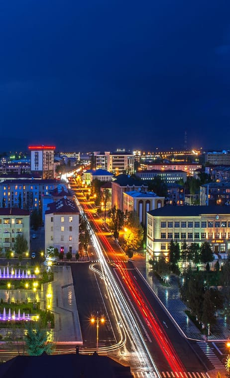
Naxçıvan
Naxçıvan
Naxçıvan təbiəti, gözoxşayan mənzərələri və özünəməxsus mətbəxi ilə ölkəmizin digər bölgələrindən tamamilə fərqlənir. Burada qədim insan məskənlərini, müxtəlif əsrlərə aid tarixi abidələri ziyarət etmək olar. Naxçıvanda sonsuz sayda sirlər və əfsanələr mövcuddur. Buranın daim inkişaf edən turizm infrastrukturu sizi təəccübləndirəcək. Daha ətraflı
Naxçıvan
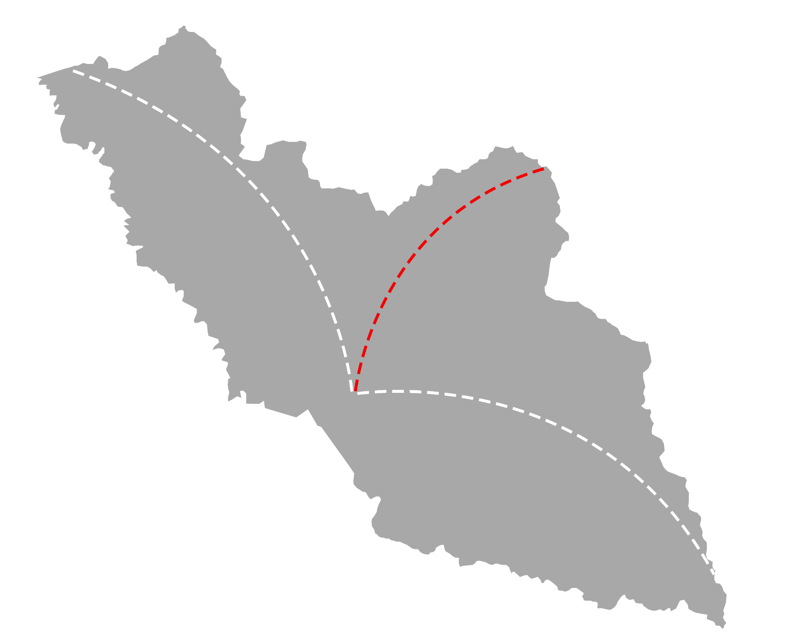
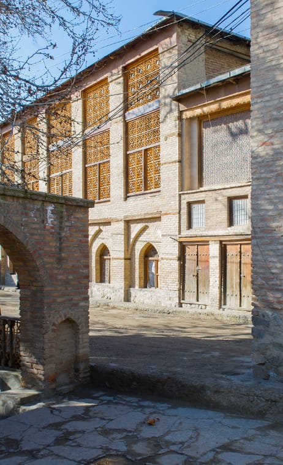
Ordubad
Ordubad
Qədim tikililəri və mədəniyyəti özündə yaşadan Ordubad şəhəri çoxəsrlik tarixi ilə insanları buraya cəlb edir həmçinin ordubadın fusunkar təbiəti görənləri valeh edir bu regionda yerləşən Pəzməri şəlalələri,Göygölü, Gəmiqaya qayaüstü təsvirləri və Zənzəgur milli parkı regiona xüsusi gözəllik qatır. Daha ətraflı
Ordubad,
Cənub-Şərq marşrutu
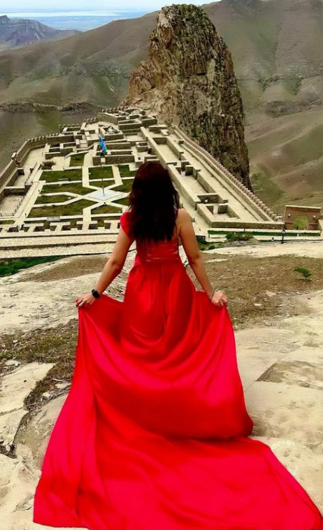
Culfa
Culfa
Culfa təbiəti, gözoxşayan mənzərələri və özünəməxsus mətbəxi ilə ölkəmizin digər bölgələrindən tamamilə fərqlənir. Burada qədim insan məskənlərini, müxtəlif əsrlərə aid tarixi abidələri ziyarət etmək olar. Culfada sonsuz sayda sirlər və əfsanələr mövcuddur. Buranın daim inkişaf edən turizm infrastrukturu sizi təəccübləndirəcək. Daha ətraflı
Culfa,
Cənub-Şərq marşrutu
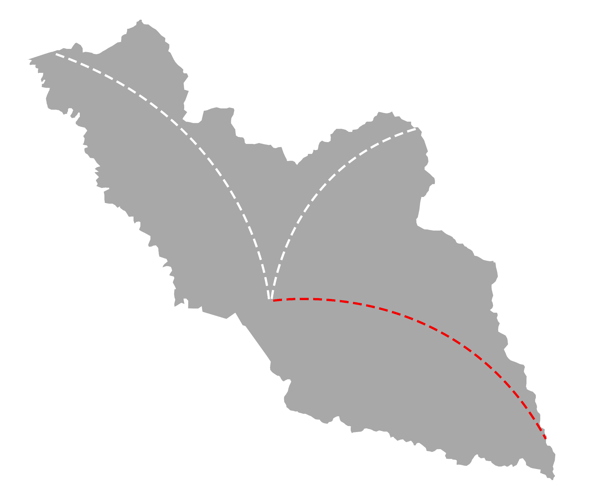
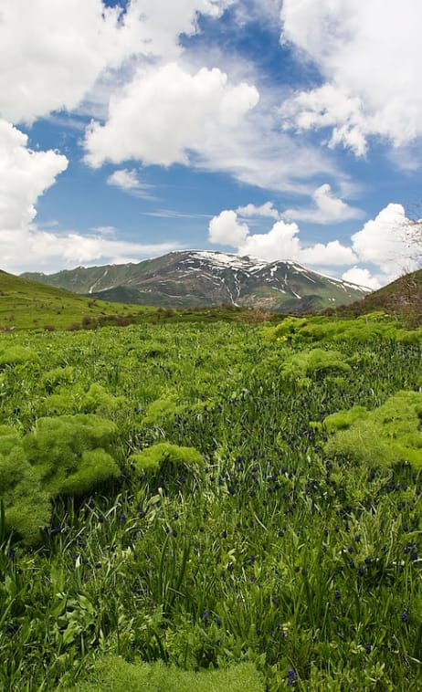
Şahbuz
Şahbuz
Şahbuz təbiəti, gözoxşayan mənzərələri və özünəməxsus mətbəxi ilə ölkəmizin digər bölgələrindən tamamilə fərqlənir. Burada qədim insan məskənlərini, müxtəlif əsrlərə aid tarixi abidələri ziyarət etmək olar. Şahbuzda sonsuz sayda sirlər və əfsanələr mövcuddur. Buranın daim inkişaf edən turizm infrastrukturu sizi təəccübləndirəcək. Daha ətraflı
Şahbuz
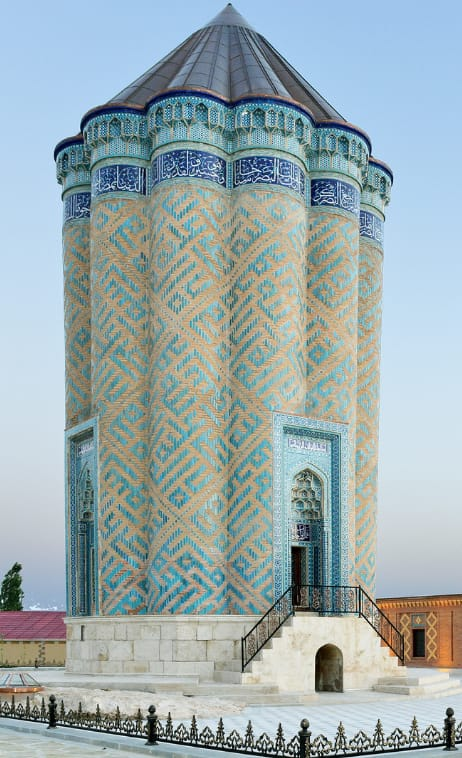
Kəngərli
Kəngərli
Kəngərli təbiəti, gözoxşayan mənzərələri və özünəməxsus mətbəxi ilə ölkəmizin digər bölgələrindən tamamilə fərqlənir. Burada qədim insan məskənlərini, müxtəlif əsrlərə aid tarixi abidələri ziyarət etmək olar. Kəngərlidə sonsuz sayda sirlər və əfsanələr mövcuddur. Buranın daim inkişaf edən turizm infrastrukturu sizi təəccübləndirəcək. Daha ətraflı
Kəngərli
maraqlı səyahət ideyaları
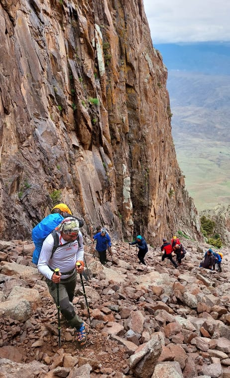
Təbiət qoynunda gəzinti
Təbiət qoynunda gəzinti
Müxtəlif marşrutlar üzərində həm təbiət, həm də tarixi abidələrin yerləşməsi dağ yürüşünü iştirakçılar üçün daha maraqlı və cəlbedici edir. Batabat gölünə haykinq zamanı haqqında rəvayətlər dolaşan arxeoloji tapıntı – Fərhad evinə baş çəkə, Batabat meşəsini, dağ çaylarını seyr edə bilərsiniz. Daha ətraflı
Naxçıvan
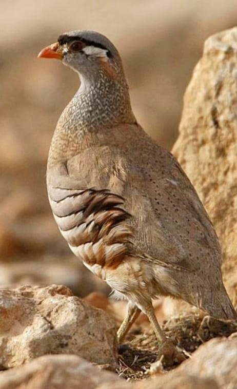
Qeyri-adi quşları kəşf edin
Qeyri-adi quşları kəşf edin
Burada mövcud olan quş müşahidəsi nöqtələrinə gedib quşları izləmək üçün iki və ya üç gün kifayət edər. Naxçıvanda mövcud olan ornitofauna Azərbaycanın digər regionlarından nəzərəçarpacaq dərəcədə fərqlənir və Türkiyənin şərqi və İranın şimal-qərbi ilə oxşarlıq təşkil edir. Daha ətraflı
Culfa,
Cənub-Şərq marşrutu
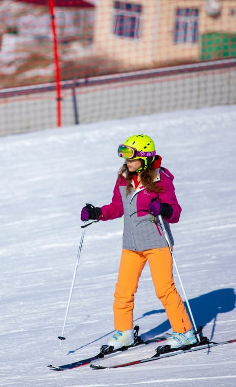
Dağ silsilələri arasında xizək macərası
Dağ silsilələri arasında xizək macərası
Şahbuz rayonunun ucqar dağ kəndi olan Ağbulaq dəniz səviyyəsindən 2 000 metr yüksəklikdə, Dərələyəz və Zəngəzur dağ silsilələri arasında yerləşir. Göz oxşayan təbiəti ilə seçilən kəndin təbii-coğrafi şəraiti sayəsində burada həm yay, həm də qış aylarında gözəl istirahətiniz üçün imkanlar var. Daha ətraflı
Şahbuz,
Şimal marşrutu
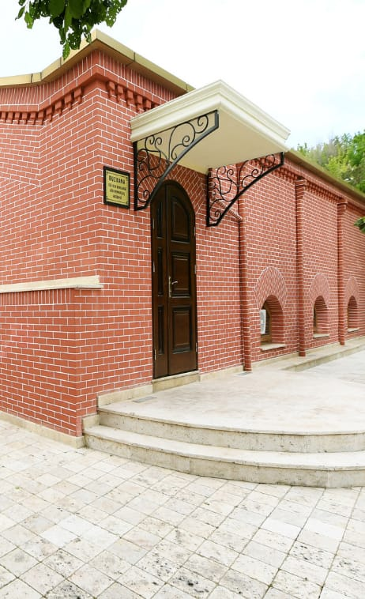
Naxçıvan mətbəxinin
təamlarını dadın
Naxçıvan mətbəxinin təamlarını dadın
Naxçıvanın qədim mədəniyyəti bölgənin dadlı mətbəxinə də təsir edib. Burada sizi ölçüləri ilə təəccübləndirəcək küftələr, kiçik və doyumlu çöçələr, doyumlu qayğanaqlar və təzə meyvələr gözləyir. Daha ətraflı
Naxçıvan
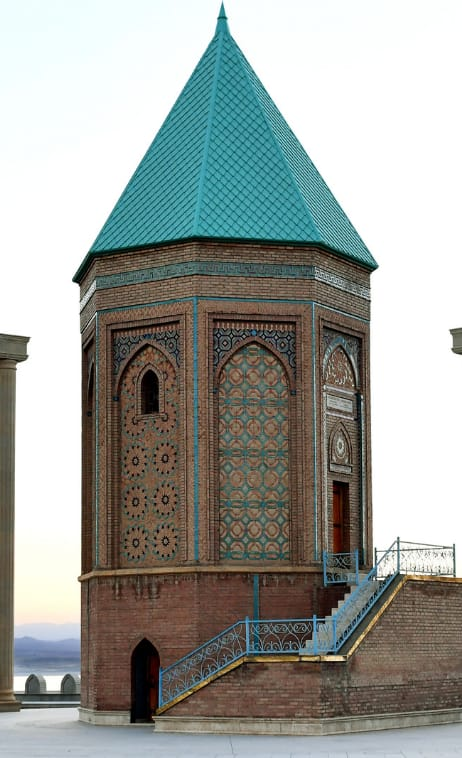
Nuh peyğəmbər türbəsini ziyarət edin
Nuh peyğəmbər türbəsini ziyarət edin
Nuh peyğəmbərin məzarının Naxçıvanda olduğunu bilirsinizmi? Naxçıvanda onlarla, hətta yüzlərlə əfsanələr, rəvayətlər, inanclar mövcuddur. Yerli əfsanələrdən birinə görə, Nuh peyğəmbər məhz bu ərazidə son günlərini yaşayıb və basdırılıb. Siz də bu tarixi yerlərə səfər edib Nuh peyğəmbərin türbəsini ziyarət edə bilərsiniz. Daha ətraflı
Naxçıvan,
Cənub-Şərq marşrutu
Naxçıvan sizin gözlərinizlə #ExperienceNakhchivan
Hər fotonun öz tarixçəsi var. Siz də Naxçıvanın gözəl məkanlarında çəkdiyiniz fotoları #ExperienceNakhchivan həştəqi ilə paylaşın və hekayənizi bütün dünya ilə bölüşün.